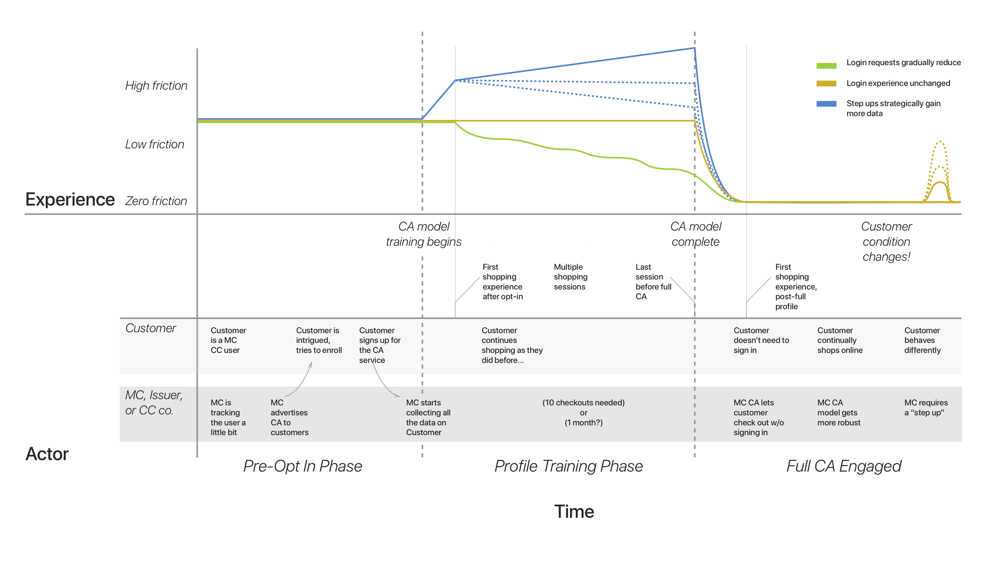
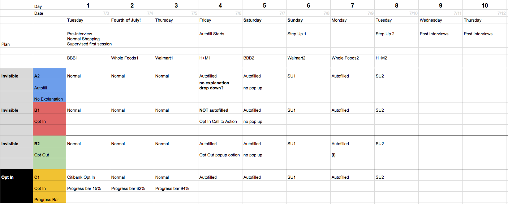

Temporal Research of Perceptions
We just returned from a pivotal trip to our client in New York, where we received fresh feedback from other product managers, designers, and tech people. We showed a number of previous sprint results and prototypes for feedback. One notable realization that is defining this next sprint is the setup of the user testing.
As we’ve identified the difficulties of conveying the temporal aspects of Continuous Authentication, we realized the limitations of user testing in a 60-90 minute format. After discussions and a suggestion from a Mastercard UX researcher in NYC, we frame this next sprint as a development of the customer journey, building a customer journey map, and testing possible avenues through a diary study.
Our overarching sprint research question:
What is the customer journey...
- ...for multiple step-ups?
- ...for the first purchase, and Nth purchase?
- ...between onboarding and the first purchase?
- ...as people stop using passwords gradually?
- ...from a web session point-of-view?
All of these questions forced us to define the sequence flow more concretely and also forced us to decide the difference between having people opt-in (telling them about the service) versus just auto-enrolling them. Our previous work with single UIs is a great starting place, but now we are testing the slight adjustments in the UIs over time.
We started with a large whiteboard session of sketching out what we think a customer journey looks like today. These three lines represent different team members best guesses as to how the customer journey may look like. The middle part of an anticipated “learning” phase for the algorithm became a large topic of discussion and really forced us to think about how much of the system the user wants to see working.
To probe this journey, the team is embarking on the largest user study to-date, with the most amount of design and tech development, as well as recruiting and testing. We have planned a type of diary study, less to gain daily routines, but to have users interact with the shopping pay point over time and test perceptions as the system shifts to a fully continuous authentication system.
We started to plan and develop a study with 6 versions, which we cut down to 4 tracks, with which we hope to get five people for each version.
| Stream Label | Opt In or Invisible | Differentiation |
|---|---|---|
| A2 | Invisible (no opt in) | Autofill with No Explanation |
| B1 | Invisible (no opt in) | Opt In to Autofill |
| B2 | Invisible (no opt in) | Opt Out of Autofill |
| C1 | Opt in via bank app | Autofill with timeline |
This could be the largest and most aggressive user test we develop this summer. The dialog we get from pre and post interviews, plus the daily user data, will generate key findings for the final deliverables regarding time and communication of role out.
We will be serving the participants a short 3 question survey after their daily task of buying one item from a random website. There are roughly three phases most participants will go through:
- 1. Buying normally by typing in CC detail
- 2. Various methods of auto-filling their data and letting them know why or not
- 3. Various step-up challenges to verify their identity.
Our main findings will be these daily surveys, plus the pre and post interview comparisons.
By this time we have fallen into a somewhat steady rhythm of roles: Nika oversees the prototype development with Grace helping designing. Aroon will be doing more tech development for this as we will need to manage and push multiple responsive web pages daily to a dozen users. Scott is structuring the study and writing content, and Zohaib is wrangling recruiting and communicating with a large gaggle of participants.
Next week will be a big push.We will be pushing out the big parts of the user test assets and getting the ball rolling on a 20+ person study!